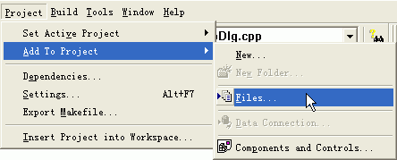
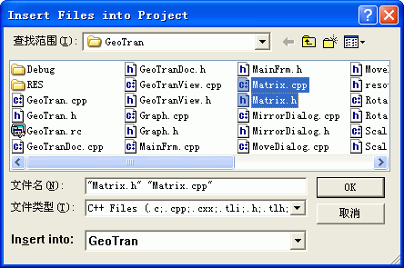
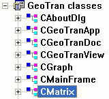

|
D.1 矩阵类定义
在计算机图形学中，很多运算都可以用矩阵运算（特别是矩阵乘）来描述，在程序设计过程中也不可避免的要使用到矩阵。一个比较自然的思路是用二维数组表示矩阵，但这样一来，矩阵的加，乘，拷贝等一系列运算都不方便实现。考虑面向对象程序设计技术，在C++语言中可以设计一个矩阵类，以完成矩阵的加，乘，拷贝等一系列运算是一个比较好的办法。
可以如下来定义一个矩阵类：
// CMatrix.h: interface for
the CMatrix class.
//
//////////////////////////////////////////////////////////////////////
#if
!defined(AFX_CMATRIX_H__CC2F3E15_9F82_11D4_A203_0000E81BB9DD__INCLUDED_)
#define
AFX_CMATRIX_H__CC2F3E15_9F82_11D4_A203_0000E81BB9DD__INCLUDED_
#if _MSC_VER > 1000
#pragma once
#endif // _MSC_VER > 1000
//用TYPE来定义double数据类型
#define TYPE
double
class CMatrix
{
public:
//构造函数
//无参构造函数
CMatrix();
//利用参数RowNumber和ColumnNumber构造矩阵
CMatrix(int RowNumber,
int ColumnNumber);
//拷贝构造函数，利用传入的矩阵Matrix拷贝构造另一个矩阵
CMatrix(CMatrix& Matrix);
//析构函数
virtual ~CMatrix();
//用指定的RowNumber和ColumnNumber创建矩阵
Create(int RowNumber,
int ColumnNumber);
//获得矩阵的行数
int GetRowNumber();
//获得矩阵的列数
int GetColumnNumber();
//操作符重载
// * 操作符
CMatrix operator *(CMatrix &Num2);
// [] 操作符
TYPE* CMatrix::operator[](int Row);
// *= 操作符
void CMatrix::operator
*=(TYPE Number);
// += 操作符
void CMatrix::operator
+=(CMatrix& Other);
// = 操作符
void CMatrix::operator
=(CMatrix& Other);
// + 操作符
CMatrix CMatrix::operator +(CMatrix
&Other);
//用于调试的转储函数
void Dump();
void Fill(TYPE FillNumber);
//生成单位阵
void MakeUnit();
private:
//矩阵列数
int ColumnNumber;
//矩阵行数
int RowNumber;
//矩阵元素
TYPE *data;
};
#endif // !defined(AFX_CMATRIX_H__CC2F3E15_9F82_11D4_A203_0000E81BB9DD__INCLUDED_)
由上述类结构可见，这个类实际上主要是重载了很多的运算符，这样一来，在程序中可以类似于这样去写：
Matrix3 = Matrix1 * Matrix2;
以实现两个矩阵的相乘。这样的写法无疑是非常清晰明了的，而且利于代码重用。
在矩阵设计的过程中规定了每个元素必须是double（#define
TYPE double）型，其实这里更好的写法是使用类模板。这个类是很多图形学算法的基础，希望大家能够将其进一步扩展以实现矩阵运算的更多功能。
D.2 矩阵类关键技术的实现
在CMatrix类中主要是类的创建和操作符的重载。
D.2.1 构造函数
////////////////////////////////////////////////////////////////////////
//构造函数CMatrix()
//----------------------------------------------------------------------
//基本功能：用传入的参数构造矩阵类对象。这里动态生成一个二维数组，用于存
//
储矩阵数据，数组类形已定义为double型。
//----------------------------------------------------------------------
//参数说明：int RowNumber 矩阵的行数
// int
ColumnNumber 矩阵的列数
//----------------------------------------------------------------------
//返 回：矩阵类对象指针
//----------------------------------------------------------------------
//编 者：耿 楠
//----------------------------------------------------------------------
//最后编改：2002年10月18日
////////////////////////////////////////////////////////////////////////
CMatrix::CMatrix(int RowNumber,
int ColumnNumber)
{
//为矩阵元素分配内空间
data = new TYPE[RowNumber*ColumnNumber];
//为行数赋值
this->RowNumber = RowNumber;
//为列数赋值
this->ColumnNumber = ColumnNumber;
}
这里动态生成了一个二维数组内存堆，用于存储矩阵数据，数组类型已定义为double型。当然，在析构函数中一定要要释放堆空间。
另外还定义了无参构造函数CMatrix()用以生成一个空的矩阵对象，拷贝构造函数CMatrix(CMatrix&
Matrix)用以完成矩阵的拷贝。
D.2.2
operator[]操作符的重载
////////////////////////////////////////////////////////////////////////
//操作符重载operator[]()
//----------------------------------------------------------------------
//基本功能：用于重载操作符[]，允许用Matrix[i][j]的形式直接对矩阵的元素进
// 操作。
//----------------------------------------------------------------------
//参数说明：int Row 矩阵元素的下标
//----------------------------------------------------------------------
//返 回：指定矩阵元素的值，为TYPE型。
//----------------------------------------------------------------------
//编 者：耿 楠
//----------------------------------------------------------------------
//最后编改：2002年10月18日
////////////////////////////////////////////////////////////////////////
TYPE* CMatrix::operator[](int Row)
{
return &(data[ColumnNumber*Row]);
}
这个函数返回一个指针，它的作用是允许我们用Matrix[i][j]的形式直接操作矩阵中的某个元素。这种写法显然比Matrix.data[i
* ColumnNumber + j]的形式来的直观。
D.2.3
operator
*操作符的重载
////////////////////////////////////////////////////////////////////////
//操作符重载operator*()
//----------------------------------------------------------------------
//基本功能：用于重载操作符*，用当前矩阵乘上另一个矩阵，得到一个新矩阵。
//----------------------------------------------------------------------
//参数说明：CMatrix& Other 另一个矩阵
//----------------------------------------------------------------------
//返 回：CMatrix 一个新矩阵。
//----------------------------------------------------------------------
//编 者：耿 楠
//----------------------------------------------------------------------
//最后编改：2002年10月18日
////////////////////////////////////////////////////////////////////////
CMatrix CMatrix::operator *(CMatrix
&Num2)
{
int RetRow, RetColumn;
//定义一个矩阵对象，并用当前矩阵的行数和列数对RetRow和//RetColumn赋值
CMatrix RetValue(RetRow = this->RowNumber,RetColumn
= Num2.GetColumnNumber());
//用0对新矩阵进行初始化
RetValue.Fill(0);
//如果当前矩阵的列数不等于传入矩阵的行数，无法进行*操作，返回//矩阵
if(this->ColumnNumber !=
Num2.GetRowNumber())
return RetValue;
int i, j, counter;
TYPE sum;
for(i = 0; i < RetRow; i++)
{
for(j = 0; j < RetColumn; j++)
{
for(sum = 0, counter = 0; counter <
this->ColumnNumber; counter++)
sum += (*this)[i][counter] *
Num2[counter][j];
RetValue[i][j] = sum;
}
}
//返回新矩阵的指针
return RetValue;
}
这个函数将当前矩阵中的各行元素与传入矩阵的各列中对应元素相乘再对其累加求各，作为新元素值，以完成两矩阵的乘运算，它返回一个指向结果矩阵的指针。其作用是允许用
Matrix3 = Matrix1 * Matrix2的形式实现两个矩阵的相乘。
该矩阵类中其它函数的作用与此类似请大家自行分析。
D.3 CMatrix矩阵类的使用
为方便大家学习，在此提供CMatrix类下载。
D.3.1 将CMatrix类加入工程
下载CMatrix类的ZIP包解压缩后会得到两个文件Matrix.h和Matrix.cpp，并将它们拷贝到当前工程目录中。然后用以下方法将CMatrix类添加到工程中：
1.如图所示选择Project→Add To
Project→Files...菜单

2.打开如图所示的文件选择对话框

3.选择对话框Matrix.h和Matrix.cpp两个文件，单击OK，便可将CMatrix类添加到工程中。
添加CMatrix类后的类结构如图所示：

D.3.2 包含头文件Matrix.h
将CMatrix类添加到工程后，还需将类定义头文件Matrix.h包含到相应的.cpp文件中才能使用它。在此可以用另一种简便的方法，即将类定义头文件Matrix.h包含到工程预编译文件stdafx.h头文件中，在stdafx.h头文件中添加以下代码：
#include <math.h>
#include "matrix.h"
此处包含math.h头文件的作用是为能够使用C++的数学函数。
这样就不必为每一个.cpp文件包含类定义头文件Matrix.h了。
D.3.3 创建CMatrix类对象
将CMatrix类添加到工程并包含了类定义头文件Matrix.h要使用矩阵类，首先得创建其类对象，有三种方法用以创建矩阵类对象。
1. 用无参构造函数CMatrix（）
在.h头文件或.cpp实现文件中，加入如下代码：
CMatrix
m_matOrigin;
便可创建一个名为m_matOrigin的矩阵类对象。值得注意的是，由于采用的是无参构造函数，所以并未分配用于存储矩阵各个元素内存，因此，还应调用CMatrix类的成员函数:
Create(int RowNumber,
int ColumnNumber)
创建RowNumber×ColumnNumber的矩阵内存堆，此后才能进行矩阵单元的访问。
2. 用构造函数CMatrix（int RowNumber, int ColumnNumber）
在.h头文件或.cpp实现文件中，加入如下代码：
CMatrix
m_matOrigin(int RowNumber,
int ColumnNumber);
便可创建一个名为m_matOrigin的RowNumber×ColumnNumber的矩阵类对象。该构造函数在创建矩阵类对象的同时并为其分配RowNumber×ColumnNumber的内存堆，此后可直接对其矩阵单元的访问。
3. 用构造函数CMatrix（CMatrix&
Matrix）
在.h头文件或.cpp实现文件中，加入如下代码：
CMatrix
m_matOrigin(CMatrix& Matrix);
便可创建一个名为m_matOrigin的矩阵类对象，并得到与传入的矩阵Matrix相同大小的内存堆，同时复制传入的矩阵单元到m_matOrigin矩阵的相应单元中，此后也直接对其矩阵单元的访问。
D.3.4 对CMatrix类对象
的操作
完成了矩阵类对象的创建后，便可通过该对象调用其相应的成员函数来完成对该矩阵的单元访问、两矩阵的相乘等操作。
1. 利用[]操作符完成对矩阵单元的访问
设有一顶点数为m_nVertexNum多边形的顶点集如下：
//顶点坐标（采用世界坐标系）
m_ptsOrigin[0] = CPoint(0 , 0 );
m_ptsOrigin[1] = CPoint(40, 0 );
m_ptsOrigin[2] = CPoint(40, 80);
m_ptsOrigin[3] = CPoint(0 , 80);
其中m_nVertexNum为int型的类成员变量，m_ptsOrigin为CPoint对象数组类成员变量，在相应.h头文件中定义（当然可以采用各种合法的方法定义该变量和数组）。可以采用下述方法将顶点集赋于m_matOrigin矩阵并将其转换为齐次坐标。
//创建m_nVertexNum×3的矩阵
m_matOrigin.Create(m_nVertexNum, 3);
//将矩阵单元赋0.0
m_matOrigin.Fill(0.0);
int i;
for(i = 0; i < m_nVertexNum; i++)
{
//将顶点的x坐标赋给矩阵的第[0]列
m_matOrigin[i][0] = (double)m_ptsOrigin[i].x;
//将顶点的x坐标赋给矩阵的第[1]列
m_matOrigin[i][1] = (double)m_ptsOrigin[i].y;
//将1.0赋给矩阵的第[2]列
m_matOrigin[i][2] = 1.0;
}
至此，便用[]操作符完成了对矩阵单元的赋值，矩阵m_matOrigin中的各个单元存储的是给定点集的相应齐次坐标。当然，也可以此操作符完成任何矩阵相关的操作。
2. 利用*操作符完成矩阵乘运算
为完成矩阵的乘法，应定义另一个矩阵，可以在程序中加入如下代码：
CMatrix Trans(3, 3);
//初始化变换矩阵
Trans.Fill(0.0);
Trans[2][2] = 1.0;
这将创建一个名为Trans的3×3矩阵，并将除Trans[2][2]单元外的所有单元赋零。在此，称其为变换矩阵。
下面仍用[]操作符完成对变换矩阵的赋值操作，可在程序中加入如下代码：
//变换矩阵为：
// 1 0 0
//
// 0 -1 0
//
// 0 0 1
Trans[0][0] = 1.0;
Trans[1][1] = -1.0;
完成变换矩阵的定义和设置后，用如下代码：
m_matOrigin = m_matOrigin * Trans;
便可完成m_matOrigin矩阵和Trans矩阵的乘运算。显然，在此的变换矩阵是完成点集沿x轴的对称变换。
便可创建一个名为m_matOrigin的矩阵类对象。值得注意的是，由于采用的是无参构造函数，所以并未分配用于存储矩阵各个元素内存，因此，还应调用CMatrix类的成员函数:
Create(int RowNumber,
int ColumnNumber)
创建RowNumber×ColumnNumber的矩阵内存堆，此后才能进行矩阵单元的访问。
与此类似，对于矩阵类中其它的应用，请大家自行学习，在此不再冗述。
D.4 小结
矩阵的运算是图形学中非常很重要的基础，在图形的变换、图形显示、投影变换中有着非常广泛的应用。矩阵类CMatrix的设计只是面向对象C++语言的一个简单的应用，在此未能用到对象C++语言的所有功能，希望大家在学习和使用中能够进行多方面的测试，并能多提建议和意见，以便我们能进一步对其进行完善。
[返回]
|